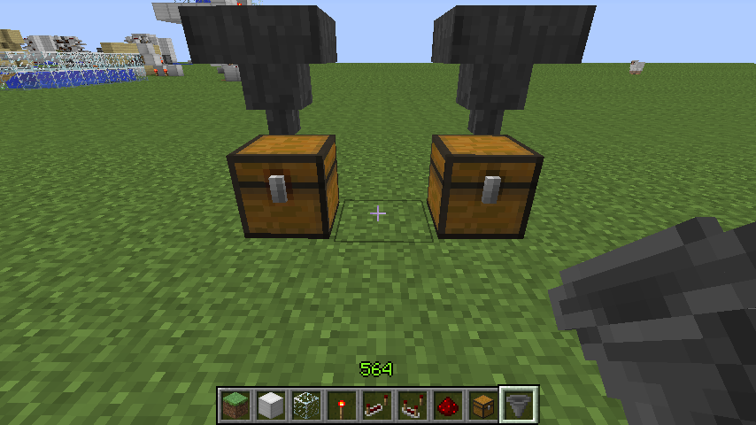
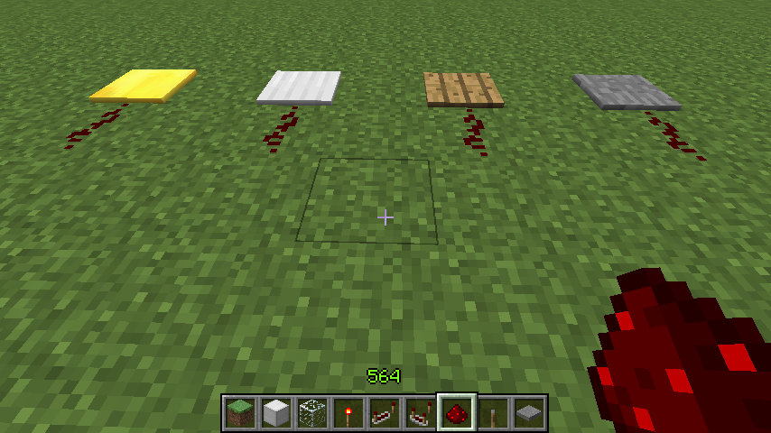

首页
上一页
194
195
196
197
198
199
199
200
201
202
203
204
下一页
末页
defanive2
无尽黑夜
14
陷阱箱的主要功能不必多说
必定是用在服务器里面进行坑人
不过由于其纹理与箱子不同
如果仔细观察，谨慎行事的话还是不容易被坑的
总之见到野外箱子就要提防了
——来自 MCLive
14014楼
2013-03-24 08:25
defanive2
无尽黑夜
14
任何类型的箱子都是不可以与大箱子相邻拜访的
如图，普通箱子无法在光标所指的位置放下
——来自 MCLive
14015楼
2013-03-24 08:27
defanive2
无尽黑夜
14
但是不同类型的箱子就可以相邻摆放了
——来自 MCLive
14016楼
2013-03-24 08:27
defanive2
无尽黑夜
14
在旧版中，最节省空间的储存可以这样排列
受限于箱子无法相邻摆放
仍然浪费了一半的空间
——来自 MCLive
14018楼
2013-03-24 08:29
defanive2
无尽黑夜
14
而在新版中有了陷阱箱
就可以把空缺的部分用陷阱箱填上了
极高的空间利用率
——来自 MCLive
14021楼
2013-03-24 08:29
defanive2
无尽黑夜
14
陷阱箱的合成需要一个普通箱子和一个绊线钩
——来自 MCLive
14022楼
2013-03-24 08:32
defanive2
无尽黑夜
14
而每2个绊线钩的合成需要1块铁
合计下来
2个普通箱：16木板
2个陷阱箱：17木板+1木棍+1铁锭
如果说铁资源不是很充裕
那么这种排列的耗资还是值得考虑的
——来自 MCLive
14023楼
2013-03-24 08:34
defanive2
无尽黑夜
14
而另外一个值得注意的不同点是
漏斗往这两种箱子加东西时
打开普通箱子，漏斗仍然可以继续加入物品
而打开了陷阱箱子，由于陷阱箱被打开后成为了能量源
给漏斗提供了能量
于是漏斗就不再加入物品了
——来自 MCLive

14024楼
2013-03-24 08:38
defanive2
无尽黑夜
14
而我在无线红石帖子里面所讲的hitbox的BUG
1.5中仍然没有被修复
因此同样的装置仍然有效
自然陷阱箱也可以这样做
不过既然都用陷阱箱了，这样的装置似乎也没有什么必要了
——来自 MCLive
14025楼
2013-03-24 08:42
defanive2
无尽黑夜
14
1.5的另外一个更新就是dropper
——来自 MCLive
14027楼
2013-03-24 08:44
defanive2
无尽黑夜
14
dropper和dispenser作用比较接近
但是dropper可以说是dispenser的最基础功能
PS 先去吃饭
——来自 MCLive
14029楼
2013-03-24 08:45
defanive2
无尽黑夜
14
好吧，吃饱继续来播
dropper的合成方法也与dispenser类似
区别在于dropper不需要弓
其实也说明了dropper的功能
——来自 MCLive
14033楼
2013-03-24 09:51
defanive2
无尽黑夜
14
区别就在于，dropper只是简单的把物品投掷出去
而dispenser会把物品发射出去
因此如果只是想把物品投掷出去，dropper很有用
例如做物品分类时
——来自 MCLive
14034楼
2013-03-24 09:56
defanive2
无尽黑夜
14
说到dispenser，1.5中也增强了很多功能
——来自 MCLive
14035楼
2013-03-24 09:56
defanive2
无尽黑夜
14
发射器可以对面前的植物使用骨粉
例如小麦，土豆，萝卜，树种，瓜苗等等
而如果面前没有作物，则不会把骨粉发射出去
从而发出一声空响
——来自 MCLive
14036楼
2013-03-24 09:58
defanive2
无尽黑夜
14
1.5中骨粉对作物使用会产生绿色的粒子效果
骨粉的效果也被减弱了
骨粉现在不会立即催熟，而会给作物增加成熟等级
绝大部分的作物都会消耗大于1个骨粉了
只有可可豆仍然只需要一个骨粉就可立即长成
——来自 MCLive
14037楼
2013-03-24 10:03
defanive2
无尽黑夜
14
而当发射器里面装的是防具时
——来自 MCLive
14038楼
2013-03-24 10:04
defanive2
无尽黑夜
14
只要玩家在一格内
就可以给玩家自动装备上
可以借此做出一个换装机器 = =
快速上装
——来自 MCLive
14039楼
2013-03-24 10:06
defanive2
无尽黑夜
14
接下来左边2个也是1.5新加的玩具
金质和银质压力板
——来自 MCLive

14040楼
2013-03-24 10:08
defanive2
无尽黑夜
14
金质和银质的目的是为了检测物品的数量
与木质和石质不同，其他entity无法激发踏板
因此人站在金银踏板上是不会提供信号的
——来自 MCLive
14041楼
2013-03-24 10:11
defanive2
无尽黑夜
14
检测物品数量的功能
只需要有1个物品就会提供出至少1格的信号
——来自 MCLive
14045楼
2013-03-24 10:15
defanive2
无尽黑夜
14
好吧，刚刚才留意到一直都把铁质压力板说成银质了。。。。
铁质比金质能承受更多的重量
金质压力板上有1个物品时发出1格信号
接下来每多4个物品就多产生1格信号
60个物品时就可以产生最高强度的15格信号了
而铁质压力板则更重一些
每多42个物品才会多加1格信号
而要到进9组半物品才会发出15格的最强信号
PS 由于四舍五入具体数据还是有差异的
最好建议自己要用前实验一下
PS PS E文wiki上的数据有误，建议不要参考
——来自 MCLive
14049楼
2013-03-24 10:26
defanive2
无尽黑夜
14
个人来说暂时想到的用处并不多
当然存在也是有其意义的
大家自由发挥吧
——来自 MCLive
14050楼
2013-03-24 10:27
defanive2
无尽黑夜
14
日光感应器也是1.5的新玩具
顾名思义，自然也就是感应日光的
但是值得注意的是
日光感应器会根据太阳的角度而调整其信号强度
也就是说虽然都在白天，但是信号强度也会不同
用日光感应器可以做出非常简单的时钟
——来自 MCLive
14051楼
2013-03-24 10:35
defanive2
无尽黑夜
14
例如刚日出时，信号强度并不强
——来自 MCLive
14052楼
2013-03-24 10:36
defanive2
无尽黑夜
14
而在正午时，信号强度明显要高于早晨
利用这个特性可以做出非常简易的时钟
——来自 MCLive
14053楼
2013-03-24 10:37
defanive2
无尽黑夜
14
而日光感应器也同时会反映出自身得到的亮度
此图中，尽管是正午
但是由于无法接受到任何亮光
因此没有发出任何信号
——来自 MCLive
14055楼
2013-03-24 10:41
defanive2
无尽黑夜
14
如图设置，由于日光感应器只能收到很少的日光
因此只会发出2格的信号
——来自 MCLive
14056楼
2013-03-24 10:42
defanive2
无尽黑夜
14
日光感应器并不会反应出其他光源的亮度情况
——来自 MCLive
14057楼
2013-03-24 10:44
defanive2
无尽黑夜
14
1.5主要还剩下3样新东西没讲
在这里我就简单陈述一下，不展开了
TNT矿车和左边的激发铁轨
顾名思义，自然就是承载TNT和激发了
而右侧则是hopper矿车
hopper矿车可以拾起沿途遇到的任何物品（不需要在hopper上方）
而行驶到容器上方时可以把物品输送下去
主要的用处就在于拾起物品这个功能
——来自 MCLive
14058楼
2013-03-24 10:47
首页
上一页
194
195
196
197
198
199
199
200
201
202
203
204
下一页
末页